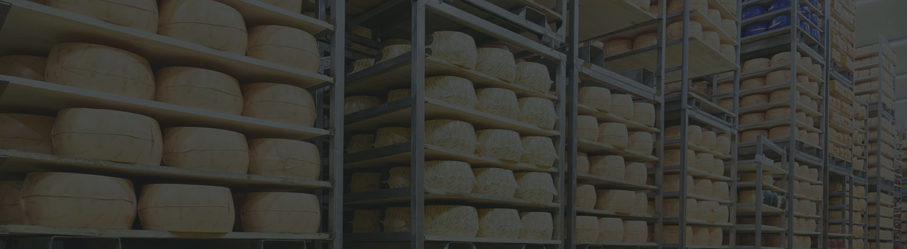

@@include('../components/NewsTitleAndDate/index.html', {
'title': 'Гран При конкурса "Лучшая продукция года - 2021"!',
'date': '15-15-15'
})
Кобринский маслодельно-сыродельнйы завод стал обладателем наивысшей награды – Гран-При за стабильное качество продукции!
9 ноября состоялась церемония награждения Победителей Конкурса «ЛУЧШАЯ ПРОДУКЦИЯ ГОДА 2021», по результатам которого предприятие было удостоено Дипломами победителя в следующих номинациях:
"Мороженое" за "Пломбир на сливках" в вафельном стакане, 12%
"Сыры сычужные" за сыры "Арамель с пажитником" 50% и "МонБлан. Старый Утес" 50%
"Масло сливочное" за масло сладкосливочное несоленое 82,5%
"Майонез" за "Провансаль кобринский" 51%.

@@include('../components/SocialBar/index.html')